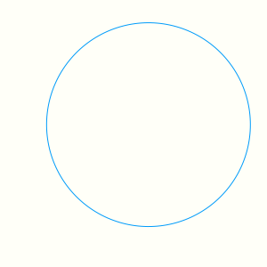
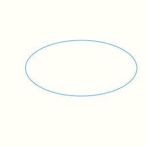

Spiral Arms Simulation
Spiral Arms in Galaxies
A few weeks back I came across a nice simulation on twitter which explained how spiral arms are formed in some galaxies. We can see the spiral arms in this hubble picture of the M18 galaxy [+][+].
It turns out there is a theory called the Lin-Shu Theory or Density Wave Theory which explains these spiral arms as the high density regions where many elliptical orbits around the center of the galaxy happen to pass. Wikipedia has some useful plots and animations [+][+]. A friend of mine is an avid astrophotographer he wanted to know if the generation of subsequent elliptical orbits is more stochastic would it still lead to such a phenomenon. I created a simulation in Julia to try this out. It is somewhat instructive to go through the process of building up such a simulation in Julia.
Parametric Plots in Julia
To plot a circle we need $(x, y)$ points such that $x^2 + y^2 = r^2$. A good way to plot this is to use a parametric equation. We can parametrize a circle by the angle $t$ as follows,
$$ x = cos(t)\\ y = sin(t) $$
It is very straight forward to plot this in Julia
using Plots
xₜ(t) = cos(t)
yₜ(t) = sin(t)
plot(xₜ, yₜ, 0, 2π, size=(300,300))

To plot an ellipse we need to the add the ability to scale major and minor axes differently.
using Plots
(a, b) = (2, 1)
xₜ(t) = a*cos(t)
yₜ(t) = b*sin(t)
plot(xₜ, yₜ, 0, 2π, size=(300,300))

Now we need to be able to rotate the ellipse. We can use the rotation operator to get the parametric equations for the ellipse rotated by an angle $\phi$.
$$ \begin{pmatrix} x' \\ y' \end{pmatrix} = \begin{pmatrix} cos~\phi & -sin~\phi \\ sin~\phi & cos~\phi \end{pmatrix} \cdot \begin{pmatrix} x \\ y \end{pmatrix} $$
(a, b, ϕ) = (2, 1, π/4)
xₜ(t) = a*cos(t)*cos(ϕ) - b*sin(t)*sin(ϕ)
yₜ(t) = b*cos(t)*sin(ϕ) - b*sin(t)*cos(ϕ)
plot(xₜ, yₜ, 0, 2π, size=(300,300))
I tend to forget the order of entries in the rotation operator. I use the following trick to derive it
$$ x → cos~\theta,~ y → sin~\theta\\ \\ e^{i\theta} = cos~\theta + i~sin~\theta \\ e^{i(\theta + \phi)} = e^{i\theta}~e^{i\phi} \\ ∴ e^{i(\theta + \phi)} = cos~\theta~cos\phi - sin~\theta~sin~\phi +i~(cos~\theta~sin~\phi + sin~\theta~sin~\phi) \\ \\ x ← x~cos~\phi - y~sin~\phi, ~y ← x~sin~\phi + x~cos~\phi \\ $$
Animating Plots
We can use the Interact package to create a GIF.
using Interact
r = 0
plot(xlims=(-10,10), ylims=(-10,10), size=(300,300))
anim = @animate for ϕ = 0:0.14:π
global r
r += 0.14
a = 1 + r
b = 2 + r
xₜ(t) = a*cos(t)*cos(ϕ) - b*sin(t)*sin(ϕ)
yₜ(t) = a*cos(t)*sin(ϕ) + b*sin(t)*cos(ϕ)
plot!(xₜ, yₜ, 0, 2π, color=:orangered)
end
gif(anim, "figures/simulation.gif", fps = 2);
Noisy Orbits
noise = x -> rand(Uniform(0,1))*x
function simulate(ϵ = 0.5)
(a, b, r) = (1, 2, 0.12)
plot(xlims=(-10,10), ylims=(-10,10), size=(300,300))
anim = @animate for ϕ = 0:0.14:π
a += r
b += r
δ = noise(ϵ)
xₜ(t) = a*cos(t)*cos(ϕ+δ) - b*sin(t)*sin(ϕ+δ)
yₜ(t) = a*cos(t)*sin(ϕ+δ) + b*sin(t)*cos(ϕ+δ)
plot!(xₜ, yₜ, 0, 2π, color=:orangered)
end
anim
end
simulate(0.5);